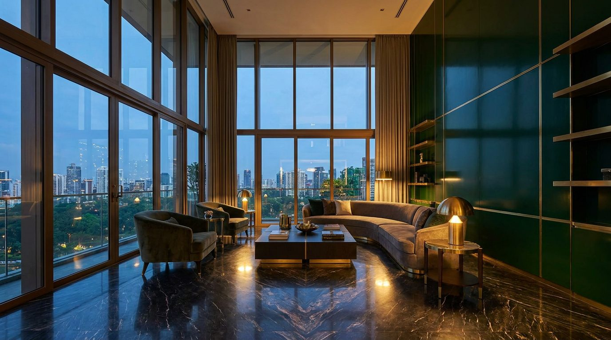

Atlante · INT-SG-01 · Singapore · Asia
Penthouse all'ultimo piano di una torre residenziale, sky garden e vetrate continue
Esempi · esterno e interno


Perché funziona
Loud per la scala: la città entra in casa con 3,4 m di vetrata continua, e ogni superficie è lucida o laccata. La ricchezza sta nel riflesso del marmo e nell'ottone brunito, non nel colore acceso: saturazione affidata a una sola parete verde bosco.
Architettura · elementi riproducibili
- vetrate a tutta altezza su due lati, 3,0-3,6 m, montanti in ottone brunito a interasse 1200 mm
- pavimento in marmo scuro lucido book-matched, lastre 900x1800 mm, fuga 2 mm
- boiserie laccata verde bosco opaca, modulo 1200 mm, spessore 40 mm, gola ombra 10 mm
- controsoffitto a 3,0 m con veletta perimetrale 150 mm e luce lineare continua
- tende in lino pesante a tutta altezza, binario a scomparsa, piega 100 mm
- terrazza-sky garden 25-40 mq con vasca a sfioro e vegetazione tropicale a portamento basso
- isola cucina in marmo scuro monolitico 3200x1100 mm
- domotica a scomparsa: pannelli a filo parete, nessun display a vista nelle inquadrature
Fatto verificato: il Newton Suites (WOHA, 2007, 36 piani, 120 m) ospita due penthouses all'ultimo piano e sky gardens distribuiti in quota; Oasia Hotel Downtown (WOHA, 2016) e CapitaSpring (BIG + Carlo Ratti, 2021, 51 piani, giardini a 100 m e orto sul tetto) documentano il lessico tecnologico-vegetale della città.
Valutazione: il registro è loud per riflesso e scala urbana, non per oro; l'ottone resta brunito e la saturazione è concentrata in una sola parete laccata.
Registro colore assegnato Color Block: due piani architettonici (pavimento scuro, parete laccata) più un neutro; il prodotto diventerà il terzo blocco.
Luce
Prompt di generazione (EN)
Top-floor penthouse living room in a Singapore residential tower, 3.4 m ceiling with a 150 mm perimeter light cove, floor-to-ceiling glazing on two sides with slim burnished brass mullions at 1200 mm centres opening onto a sky garden terrace, book-matched dark grey polished marble floor in 900 x 1800 mm slabs, one long wall in matte deep green lacquered boiserie with a 10 mm shadow gap, ivory lime-plaster ceiling, full-height heavy linen curtains, only a low grey bouclé sofa and a dark marble block table, hard late-afternoon sun from the west at 40 degrees raking across the glossy floor, humid haze and distant towers beyond the glass, 28 mm lens at 1.25 m height, two-point perspective with parallel verticals, no people, no text, no logos.